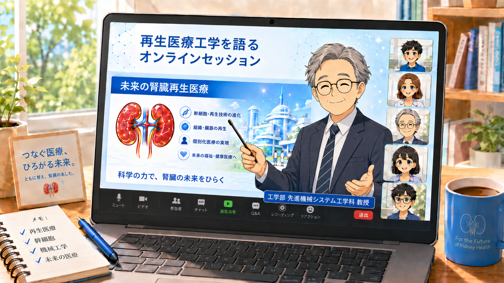
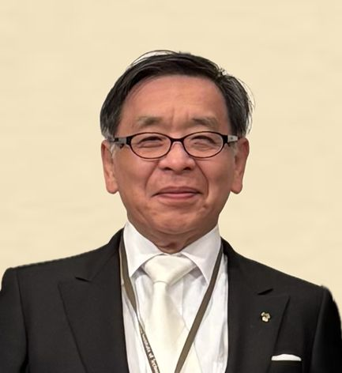

Online Session Series
再生医療工学を語るオンラインセッション
臓器移植に頼らない未来を目指して
金沢工業大学 工学部 先進機械システム工学科 教授の中村真人が、長年の再生医工学の研究の歩みから、再生医療の原点から医工融合による革新とそれによって拓ける未来までをオンラインで語る新しい取り組みです。
未来の医療や臓器移植に頼らない未来をともに考える仲間を募集しています。
＊一般の方、再生医療を知らない方、初心者、専門家を問わず、広く、次のような方々のご参加を歓迎します。
＊このオンラインセッションは、専門家だけの研究会ではありません。再生医療や医工学の最前線をわかりやすく共有しながら、「臓器移植に頼らない未来の医療」を、社会の中でどのように育てていくかを考える場です。
特に、専門知識がなくても大丈夫です。「未来の医療を知りたい」「再生医療を社会に届けるには何が必要か考えたい」そのような関心をお持ちの方を、広く歓迎します。

- 理念 「臓器を作る、育てる、再生する」再生医療工学をわかりやすく伝え、臓器移植に頼らない未来を、社会とともに考える場を作る。
- 対象となる方 医療・再生医療・未来の科学技術に関心のある一般の方、学生、保護者、医療者、研究者、企業・行政関係者など。
- 活動方法・対話の進め方 講演、研究紹介、質疑応答、意見交換を通じて、参加者とともに学び考える対話型の場作りを目指します。
News
お知らせ
- 学会発表しました。（金沢工大チーム）：第65回日本生体医工学会大会（仙台）
- 学会発表しました。（富山大学チーム）：第23回泌尿器科再建再生研究会（東京）
- 特別講演で講演することになりました。：第56回日本腎臓学会西部学術大会（金沢）
- 特別講演で講演することになりました。：日本動物実験代替法学会 第39回大会（姫路）
Sessions
これまでの開催情報
Next
次回以降の予定（案）
- 皆様との対話から次からの内容を決めていきたいと思います。
- Q＆Aの時間をもっととれるようにしたいと思います。
- 第3～5回は、第1回、第2回オンラインセッションにご参加くださった方々からのアンケートでのご希望を踏まえ、以下の内容をテーマに順々に進めていこうと思います。アンケートにご回答くださった方、どうもありがとうございます。
- 03第3回 医工学基礎編なぜ臓器移植に頼らない医療を目指すのか？
- 04第4回 再生医療工学編臓器をつくる・育てる・再生する 再生医療と再生医療工学の今
- 05第5回 先進再生医療工学編再生医療工学が拓く未来医療
Speaker
本オンラインセッション主催責任者・講師について

主催責任者・講師：
中村 真人 （なかむら まこと） 医師・博士（医学）
- 金沢工業大学 工学部 先進機械システム工学科 教授
- 富山大学名誉教授
プロフィール
金沢大学小児科学教室で小児科学を学ぶ。小児科臨床医として診療に向き合う中で、 臓器移植が必要な患者さんに出会い、臓器移植医療を学ぶとともに、 「誰かの臓器を願い待つ必要がない未来医療」が必要と考え、人工臓器、再生医療の研究に取り組んできた。 再生医療の研究では、生きた臓器をつくるために機械で臓器をつくる挑戦 「3Dバイオプリンティング」という医学と工学が融合する新しい研究領域を開拓した。 さらに、現在は、体外で臓器を育て再生する「臓器灌流×臓器再生」の研究に取り組んでいる。
専門領域: 再生医工学、生体医工学、生命工学、人工臓器、先進治療学
Contact
主催事務局・問い合わせ先
金沢工業大学 工学部 先進機械システム工学科
中村真人研究室 『先進再生医療工学講座』